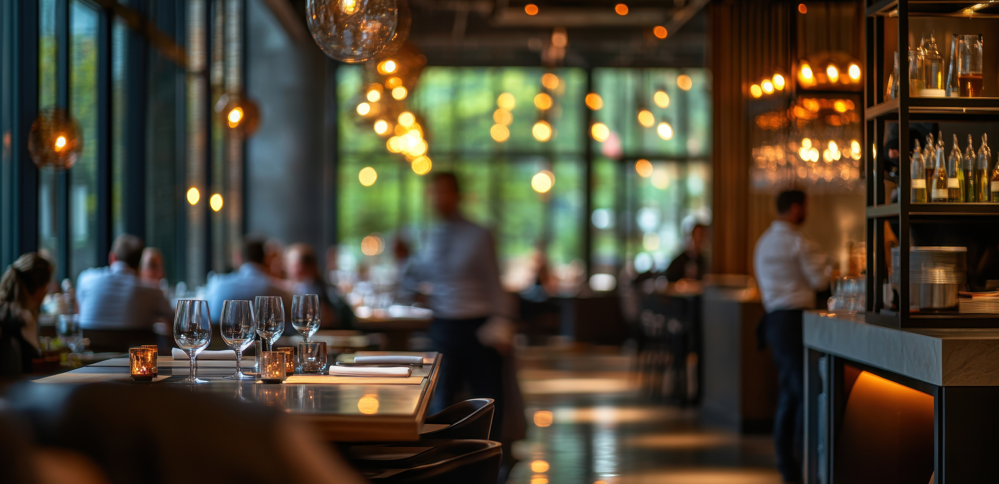
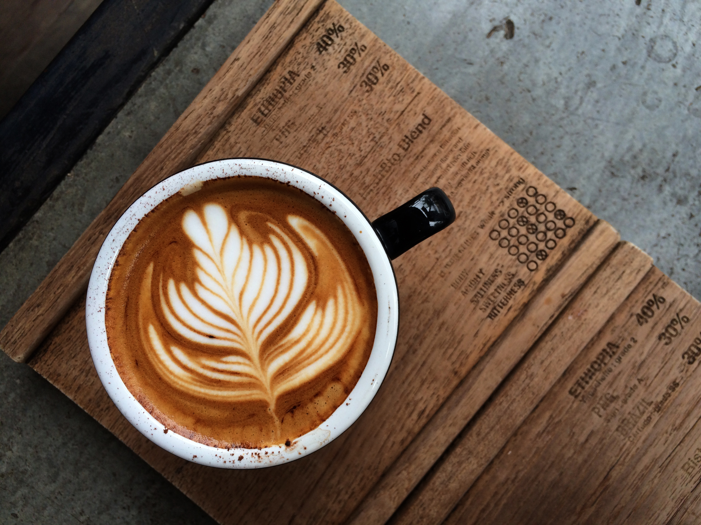
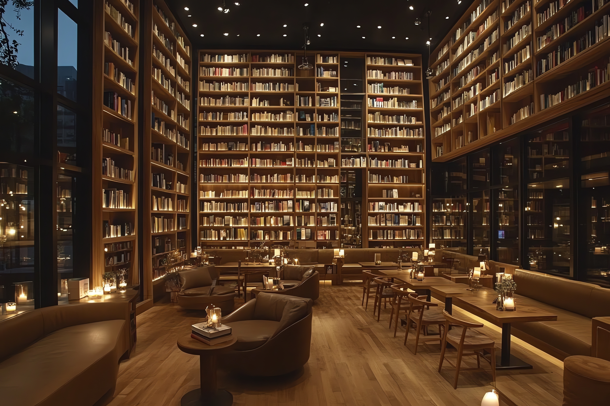
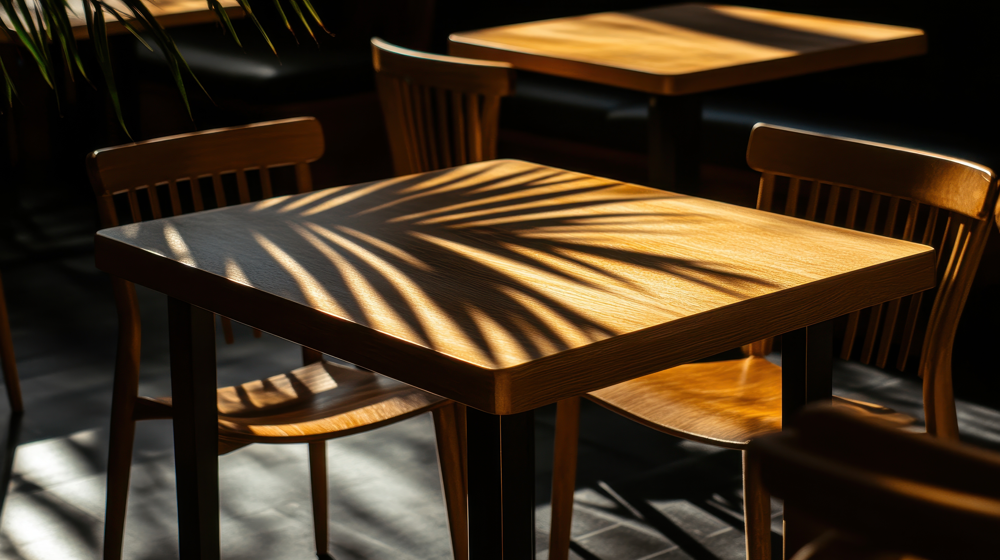
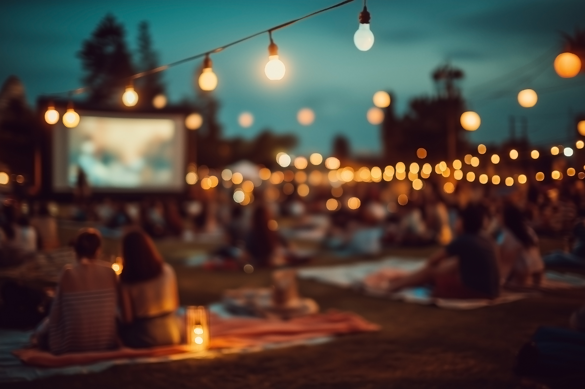

Under warm bulbs, conversations linger past closing time.

Movement and murmurs blur into a rhythm of late dining.

Every pour holds a ritual, etched in milk and steam.

Stories on the shelves mirror the ones unfolding over coffee.Music spills into the street, weaving with the scent of roasted beans.

Inside, reflections shimmer like the conversations they host.

Shared moments turn strangers into a community of night dwellers.Gatherings after dusk keep the pulse of the café alive.